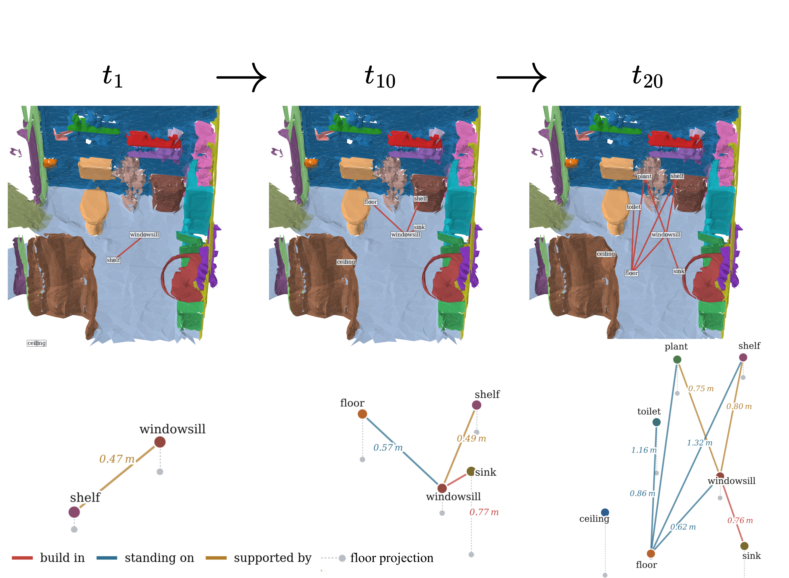
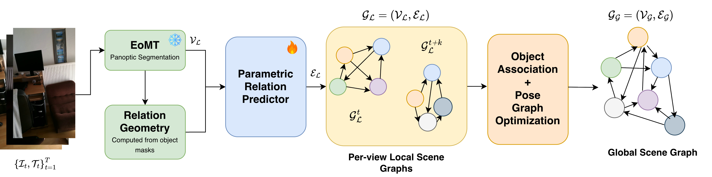
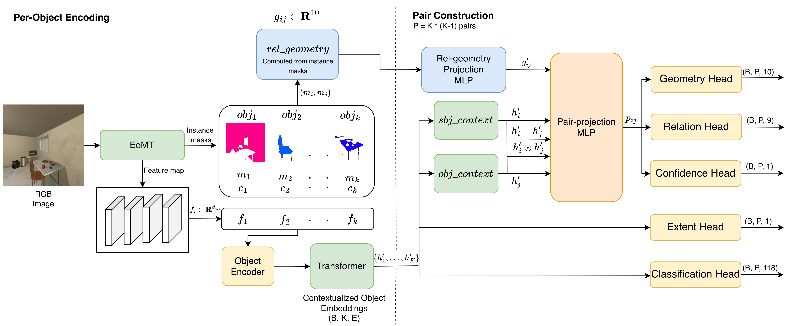
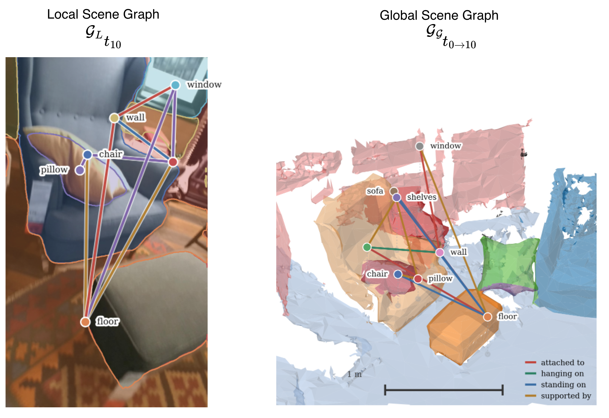
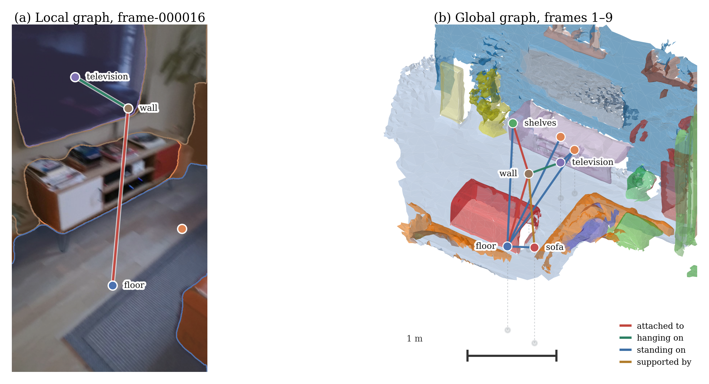
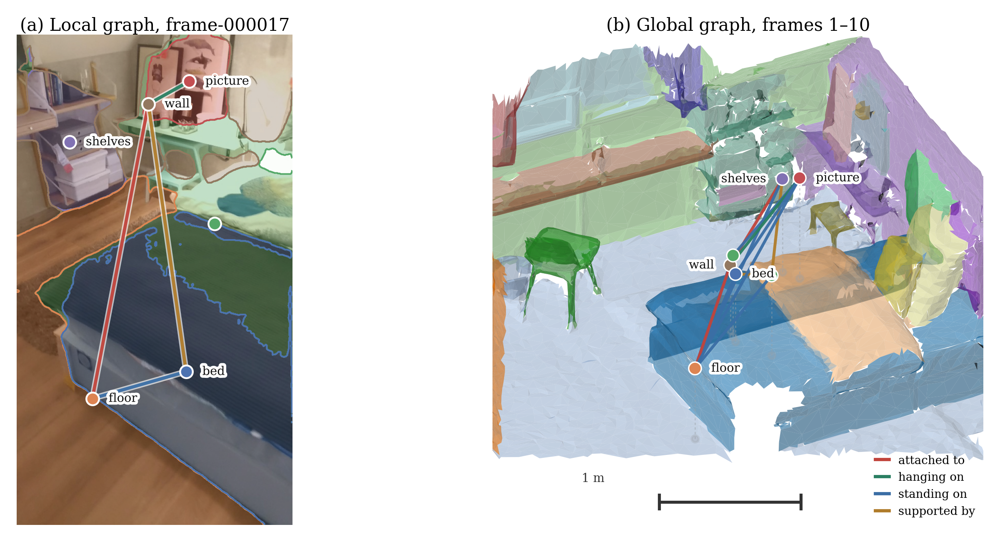
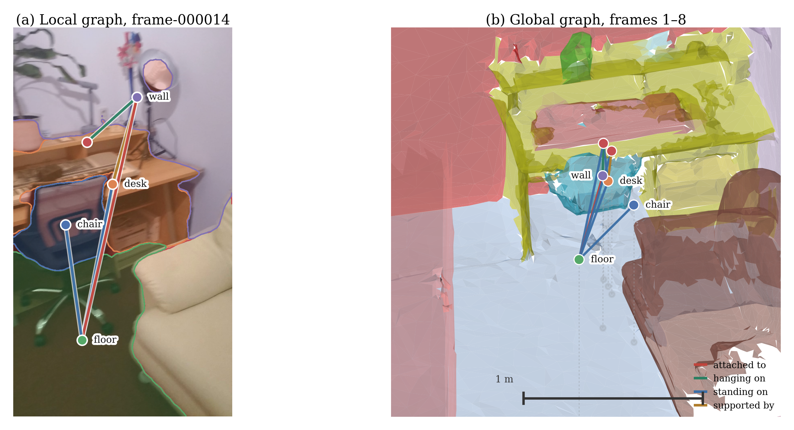
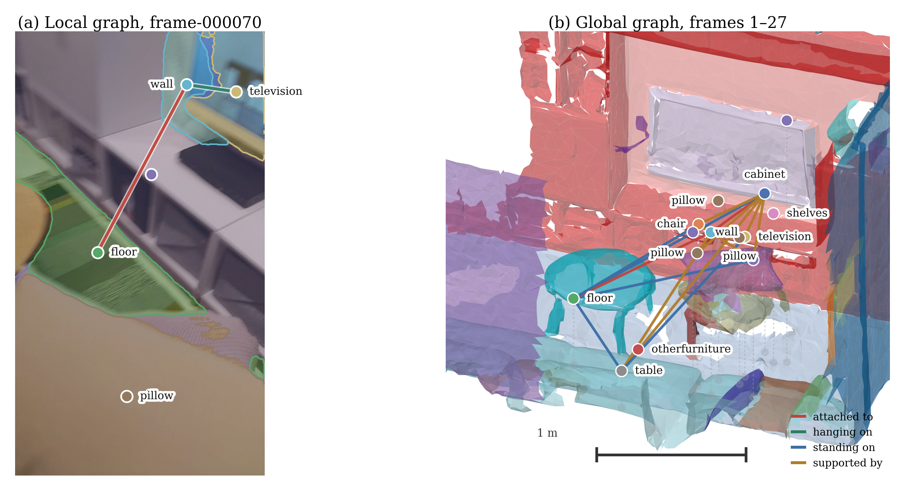
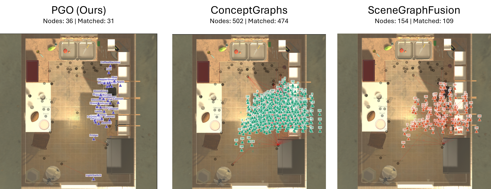

Figure 1: Incremental construction of the global scene graph $\mathcal{G}_G$ over 20 processed views. Nodes are instantiated when an object is first detected and refined as subsequent views contribute pairwise metric constraints. The 3RScan mesh is shown in the global frame purely for spatial reference, illustrating how predicted nodes align with annotated instances. Our method observes no depth and builds no point cloud or mesh, estimating 3D object positions and semantic relations directly from posed RGB observations.
Scene graphs provide a compact, structured representation of environments by capturing objects and their spatial or semantic relationships in a form suitable for embodied agents. Existing 3D scene graph generation methods often rely on depth sensing at inference, either to associate object instances across views via point cloud overlap or to compute inter-object relations from geometric cues, limiting deployment to platforms with depth sensors. We propose IncR-3DSGG, which builds 3D scene graphs incrementally from posed RGB images, eliminating the use of depth sensors at inference. Our method leverages a Parametric Relation Predictor (PRP) that learns to estimate pairwise distances and relative angles between objects from 2D visual features and 2D geometric cues, using 3D geometric supervision available only during training. These learned pairwise measurements are fused across views through Pose Graph Optimization (PGO) to recover metrically grounded 3D object positions and build a globally consistent 3D scene graph incrementally. On the real-world 3RScan dataset, our method attains 48.1 mean object recall and 35.1 mean predicate recall under the 3DSSG evaluation protocol, substantially exceeding the strongest baseline on both (27.0 and 17.6) while receiving no reconstructed geometry. It also produces less fragmented instance associations (1.16 vs. 1.73–1.74), showing that structured 3D scene representations can be built without runtime depth sensing.
IncR-3DSGG constructs a persistent 3D scene graph $\mathcal{G}_G = (\mathcal{V}_G, \mathcal{E}_G)$ incrementally from an exploration sequence of posed RGB images $(I_t, T_t)$. The framework operates in two coupled stages: per-view local scene graph generation ($\mathcal{G}_L$) and incremental global graph aggregation.

Figure 2: Overview of the IncR-3DSGG framework. Given an RGB image $\mathcal{I}_t$ and camera pose $\mathcal{T}_t$, a frozen EoMT panoptic backbone detects per-object nodes $\mathcal{V}_L$ and computes relative 2D geometry. The Parametric Relation Predictor (PRP) converts co-visible object pairs into edges $\mathcal{E}_L$ carrying 3D pairwise geometry and support predicates. Local detections are merged into the global scene graph $\mathcal{G}_G$ via visual Hungarian matching, and object positions are globally recovered via Pose Graph Optimization (PGO).
where constraint weights $w_{ij} = \gamma_{ij}/(1 + e_i + e_j)$ penalize large object extents ($e_i, e_j$) and leverage PRP's predicted confidence $\gamma_{ij}$.
Inferring 3D inter-object geometry from monocular 2D images is under-constrained. We decouple the training supervision from the inference modality: PRP is trained using privileged 3D supervision (depth maps and point clouds available only during training) but requires strictly monocular RGB at inference.

Figure 3: Architecture of the Parametric Relation Predictor (PRP). Left (Per-Object Encoding): Mask-pooled visual features and category embeddings are contextualized through an unordered Transformer encoder. Right (Pair Construction & Heads): For every directed pair $(i,j)$, contextualized tokens $h'_i, h'_j$ are concatenated with their difference, product, and projected 10-D 2D relative geometry $g'_{ij}$. Dedicated heads predict 3D centroid geometry, contact/containment features, support relation class, pairwise confidence, and object extents.
The pairwise input vector $g_{ij} \in \mathbb{R}^{10}$ is computed purely from 2D masks and boxes:
Sparse setting (l20: 20 object classes, 8 predicates, 157-scan test split). All methods observe identical RGB keyframes and poses; baselines read geometry from an ORB-SLAM3 point map, whereas IncR-3DSGG receives no triangulated geometry.
| Method | Geometry Input | Recall (R@1) | Mean Recall | |||
|---|---|---|---|---|---|---|
| Obj | Pred | Trip | mR.Obj | mR.Pred | ||
| IMP | Sparse points (ORB-SLAM3) | 27.5 | 90.8 | 8.5 | 20.4 | 14.0 |
| VGfM | Sparse points (ORB-SLAM3) | 27.7 | 90.6 | 8.8 | 24.5 | 13.9 |
| 3DSSG | Sparse points (ORB-SLAM3) | 10.8 | 90.1 | 1.3 | 6.0 | 13.7 |
| SGFN | Sparse points (ORB-SLAM3) | 14.8 | 88.2 | 2.2 | 8.6 | 15.5 |
| MonoSSG | Sparse points (ORB-SLAM3) | 28.6 | 89.8 | 9.8 | 27.0 | 17.6 |
| IncR-3DSGG (Ours) | Predicted (No point cloud) | 36.7 | 93.7 | 9.4 | 48.1 | 35.1 |
| Ours (GT masks oracle) | Predicted (No point cloud) | 67.2 | 89.8 | 34.8 | 78.4 | 58.6 |
| Method | 3RScan (Real-world scans) | AI2-THOR (Predicted masks) | ||||
|---|---|---|---|---|---|---|
| GTRec ↑ | Purity ↑ | Frag. ↓ | PosErr (m) ↓ | Frag. ↓ | PosErr (m) ↓ | |
| ConceptGraphs-style (RGB-D) | 0.585 | 0.897 | 1.743 | 0.680 | 1.319 | 3.250 |
| SGFusion-style (RGB-D) | 0.714 | 0.802 | 1.738 | 0.741 | 1.935 | 2.226 |
| IncR-3DSGG (Ours, RGB-only) | 0.400 | 0.664 | 1.156 | 1.159 | 1.129 | 0.899 |
| Method | Random Camera Yaw | Non-Zero Fixed Rotation | ||||||
|---|---|---|---|---|---|---|---|---|
| Purity ↑ | Frag. ↓ | PosErr ↓ | Nodes | Purity ↑ | Frag. ↓ | PosErr ↓ | Nodes | |
| ConceptGraphs-style | 0.904 | 17.889 | 3.064 | 928.7 | 0.874 | 9.952 | 2.744 | 338.2 |
| SGFusion-style | 0.884 | 13.649 | 3.129 | 689.0 | 0.864 | 14.091 | 3.485 | 493.8 |
| IncR-3DSGG (Ours) | 0.883 | 1.132 | 1.330 | 54.0 | 0.843 | 1.186 | 0.861 | 42.2 |
| Method | MAE (m) ↓ | Scans Won |
|---|---|---|
| VGGT (oracle scale-corrected) | 0.610 ± 0.216 | 32 / 156 |
| PRP (Ours, direct metric) | 0.487 ± 0.140 | 124 / 156 |
| Module | Latency (ms) | Share |
|---|---|---|
| EoMT Segmentation | 1008.0 ms | 98.4% |
| PRP Inference | 2.3 ms | 0.2% |
| Hungarian Association | 1.4 ms | 0.1% |
| PGO Optimization | 12.5 ms | 1.2% |
| Total per View | 1024.2 ms | 100% |
In each example, the left panel shows the single-frame local scene graph $\mathcal{G}_L$ with nodes at panoptic mask centroids and edges predicted by PRP. The right panel displays the accumulated global 3D scene graph $\mathcal{G}_G$ with nodes placed at PGO-optimized metric coordinates. The textured scan mesh is displayed solely for visual reference and is never provided to our model.


68bae75f ($t=9$): Local scene graph $\mathcal{G}_L$ (left) and accumulated 3D global graph $\mathcal{G}_G$ (right).

7272e17c ($t=10$): Consistent multi-object relation estimation and 3D landmark localization.

c2d99345 ($t=8$): Structured spatial arrangement recovered directly from monocular RGB frames.

f2c76fe7 ($t=27$): Extended sequence accumulation over 27 views, maintaining low instance fragmentation.
